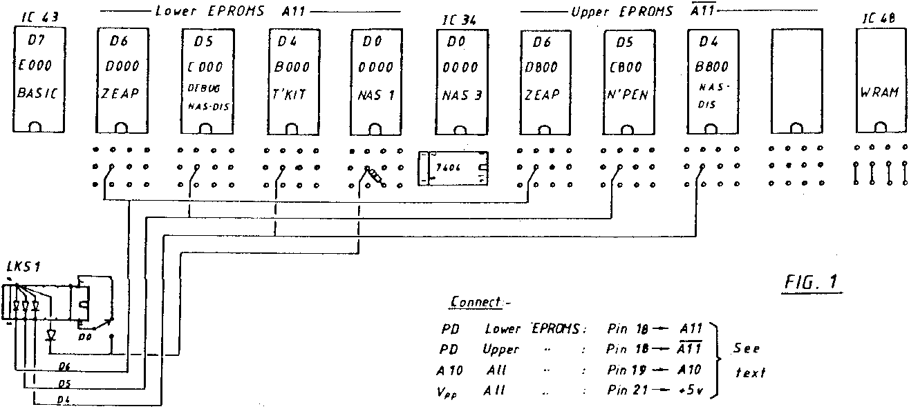

INMC 80 News |
October–December 1981 · Issue 5 |
| Page 33 of 71 |
|---|
Each 4K block used must also be gated into the IC44a/RDB circuitry and this can be conveniently effected by wiring small signal diodes from the block pulse (pins 10, 11 or 12) to pin 7 on LKSI (XROM).
Sometimes it may be required to switch different EPROMS into a given memory location and fig. 1 shows a method of doing this for, in my case, alternative monitors. The appropriate block pulse is switched to the appropriate pin 20 but it is necessary to disable the non used EPROM by allowing its Pin 20 to go high via a 1K resistor to +5v. The 1K for the original monitor is already on board (R53) but must be provided for any non-used EPROM. The gating diode for the switched monitor is also taken to LKS1-7.
All the EPROMS used are single rail as these are readily available and hence the +12v and −5v connections are not used.
As I am still waiting for delivery of a 4K EPROM programmer, I have not tried this yet, but it looks to me as if a 4K EPROM can simply be plugged into a socket with A11 on Pin 18, in which case A11 will not be necessary.
Most of the wiring has been on the solder side of the board as I find wiring onto the link pins is not easy – and in any case it does not show on the bottom! Do not try using the spare IC7b and IC7h gates as A11 inverters as they are only buffer gates – not buffer inverters. It took me quite a time to realise this.
The diagram shows how I have populated my sockets but of course any socket can be used by suitable connections of A11 or A11 and the relevant block pulse to pin 20.
Mods To Populate With 2K (or 4K?) EPROMS
| Page 33 of 71 |
|---|